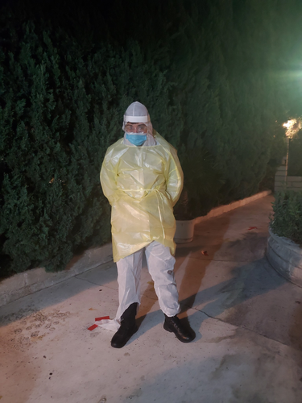

Isaiah Lynch
I have extensive experience researching and documenting the needs of my local population. As Senator at Large of my Community College, I represented the student body as SSCCC region IX delegate where I worked to expand CA Bill 367 and push for easier accessibility to free menstruation products. I served as liason between the students and upper management of the college by dispursing information relevant to the student body. I also lead and set up campus events and faires for the student body.
I became an EMT right before the COVID-19 epidemic started, and worked through the epidemic's beginning and worst stages. I gained the confidence to maintain a person's wellbeing through the deadliest emergencies, and worked the discipline to dispurse vital reports on the health and physical status of the deathly ill. I gained the ability to communicate to the public and assuage fears even when things are at their absolute worst.
I love history; researching history has helped shape my ability to critically think and look through any situation from multiple perspectives. I know how to fixate on the minute details and detail them in my reports as exemplified through my work as an EMT when having to notate and communicate how for example: A patient was complaining about they had hit their head in a traumatic event weeks prior, and had passed out after coughing out bloody sputum. This small detail could indicate imminent death and subdural hematoma.
Experience
SSCCC Region IX Delegate
• Researching and communicating social issues between colleges: Convening monthly to discuss solutions.
• Furthering CA Bills such as CA Bill 367 to expand access to free menstruation products.
• Attended the Annual SSCCC Conference in Sacramento to lobby on behalf of Community College and CSU Students in California.
Emergency Medical Technician
• Experience working under extreme stress environmentss
• Assuaged the worries and concerns for both patients and their families.
Special Education Teaching Assistant
• Assisted in developing fine motor skills for children in need.
• Aided in the creation of lesson plans.
• Experienced in meeting hundreds of children throughout the Redlands Unified School District and catering to their needs.
Education
Crafton Hills College
University of California Riverside
Portfolio
